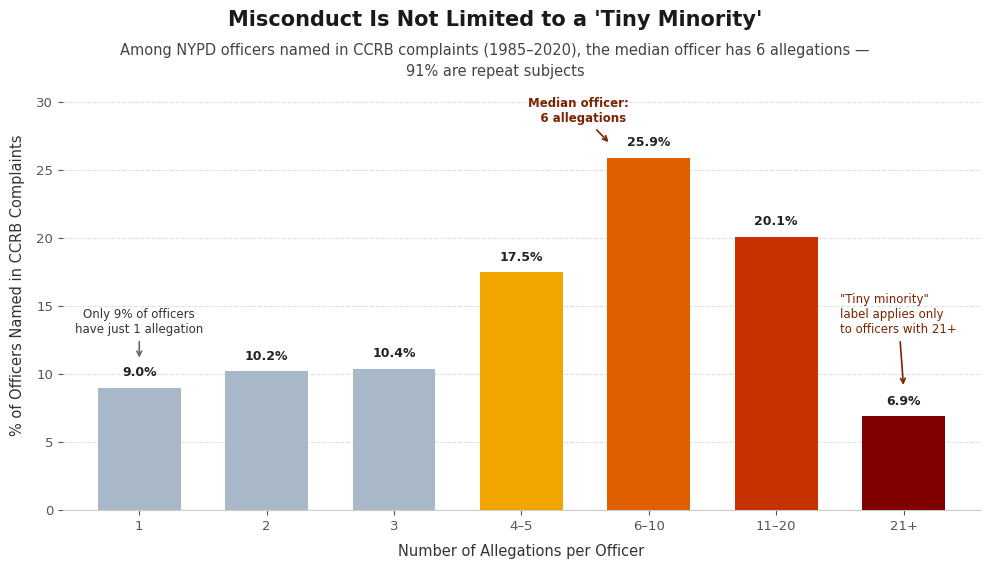

Proposition: [STATE PROPOSITION]
FOR the Proposition
Design Decisions and Rationale:
- RATIONALE_1
- RATIONALE_2
- RATIONALE_3
AGAINST the Proposition

Design Decisions and Rationale:
-
Asymmetric bin widths on the x-axis
Score: -1
The categories are not evenly spaced: 1, 2, and 3 each represent a single value, while 4–5, 6–10, 11–20, and 21+ span increasingly wide ranges. This makes the right-side bars appear visually equivalent in width to the precise single-value bars, even though each encodes a much broader range of the data. I considered using uniform bin widths, but this would have made the distribution look flatter and less dramatic. This decision helps to persuade the audience that the “typical” officer is a repeat offender – not just anomalies from a few “bad apples”. The only issue I have with this is that it becomes a bit apparent once you take a closer look at the y-axis; however, it’s not as apparent at a first glance. -
Color encoding as both functional and emotional signal
Score: -0.5
Functionally, it uses a colorblind-safe sequential palette to signal magnitude. By using a perceptually uniform color scale, it reads easily to the eye. Emotionally, it borrows from danger/heat conventions—readers intuitively associate red with alarm without being told to. In this way, I can manufacture a sense of escalating severity. By making the lower allegation counts gray and unnoticeable, the audience is drawn away from them, instead focusing on the bold colors that demonstrate high allegation counts. An issue with this is that the colors don't really have much meaning or a legend—they're primarily based on higher counts and are meant to supplement the user’s interpretation of the graph. -
Annotations throughout the graph
Score: (not provided)
These annotations are placed throughout the graph to direct readers and align them with the argument in the title and subtitle, specifically highlighting the small number of officers with only 1 allegation, the median officer with 6 allegations, and demonstrating that the “Tiny Minority” of officers with high allegations only applies when you get to 21+ allegations. This allows the audience to be persuaded by our own annotations, drawing conclusions they may not have at first glance. -
Subtitle mentioning that 91% of officers in the dataset are
repeat subjects
Score: 1
While this is true, the number can be slightly misleading. We don’t know the true proportion of officers that have had an accusation filed against them—we only have data on officers that have had an accusation. Therefore, it is more likely for us to observe repeat offenders over a 35-year period. Despite this persuasion, all of this information is readily present in the subtitle—it specifically lists the period of time as well as acknowledging that this is only counting the officers named in these complaints.
Final Reflection
[WRITE FINAL REFLECTION PARAGRAPHS HERE.]